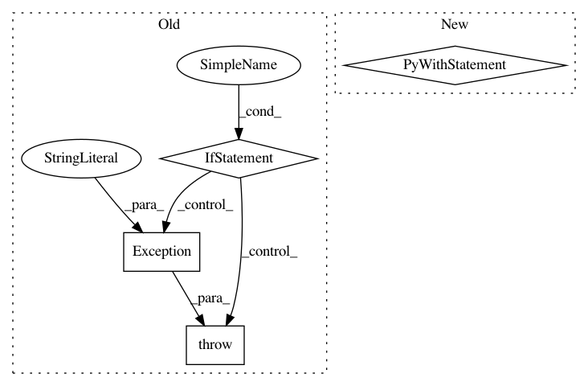

b2e6cccd53bd6c076c32421b8c4d562a96437524,tensorlayer/layers/normalization.py,LayerNormLayer,__init__,#LayerNormLayer#Any#Any#Any#Any#Any#Any#Any#Any#Any#Any#Any#,228
Before Change
begin_params_axis=-1,
name="layernorm"):
if tf.__version__ < "1.3":
raise Exception("Please use TF 1.3+")
Layer.__init__(self, name=name)
self.inputs = layer.outputs
logging.info("LayerNormLayer %s: act:%s" % (self.name, act.__name__))
with tf.variable_scope(name) as vs:
After Change
if tf.__version__ < "1.3":
// raise Exception("Please use TF 1.3+")
with tf.variable_scope(name) as vs:
self.outputs = tf.contrib.layers.layer_norm(
self.inputs,
center=center,
scale=scale,
activation_fn=act,
reuse=reuse,
variables_collections=variables_collections,
outputs_collections=outputs_collections,
trainable=trainable,
// begin_norm_axis=begin_norm_axis,
// begin_params_axis=begin_params_axis,
scope="var",
)
variables = tf.get_collection(TF_GRAPHKEYS_VARIABLES, scope=vs.name)
else:
with tf.variable_scope(name) as vs:
self.outputs = tf.contrib.layers.layer_norm(
self.inputs,
In pattern: SUPERPATTERN
Frequency: 3
Non-data size: 4
Instances
Project Name: tensorlayer/tensorlayer
Commit Name: b2e6cccd53bd6c076c32421b8c4d562a96437524
Time: 2018-03-10
Author: dhsig552@163.com
File Name: tensorlayer/layers/normalization.py
Class Name: LayerNormLayer
Method Name: __init__
Project Name: ray-project/ray
Commit Name: 1d532d1cb8b829bdf7055a22c206032ca0b72e46
Time: 2020-04-02
Author: rkooo567@gmail.com
File Name: python/ray/tests/test_webui.py
Class Name:
Method Name: test_get_webui
Project Name: ray-project/ray
Commit Name: 5cfa1934e4a2157d07ef534e1033a3f0e5bc1082
Time: 2020-12-18
Author: me@barakmich.com
File Name: python/ray/experimental/client/server/server.py
Class Name: RayletServicer
Method Name: _schedule_function